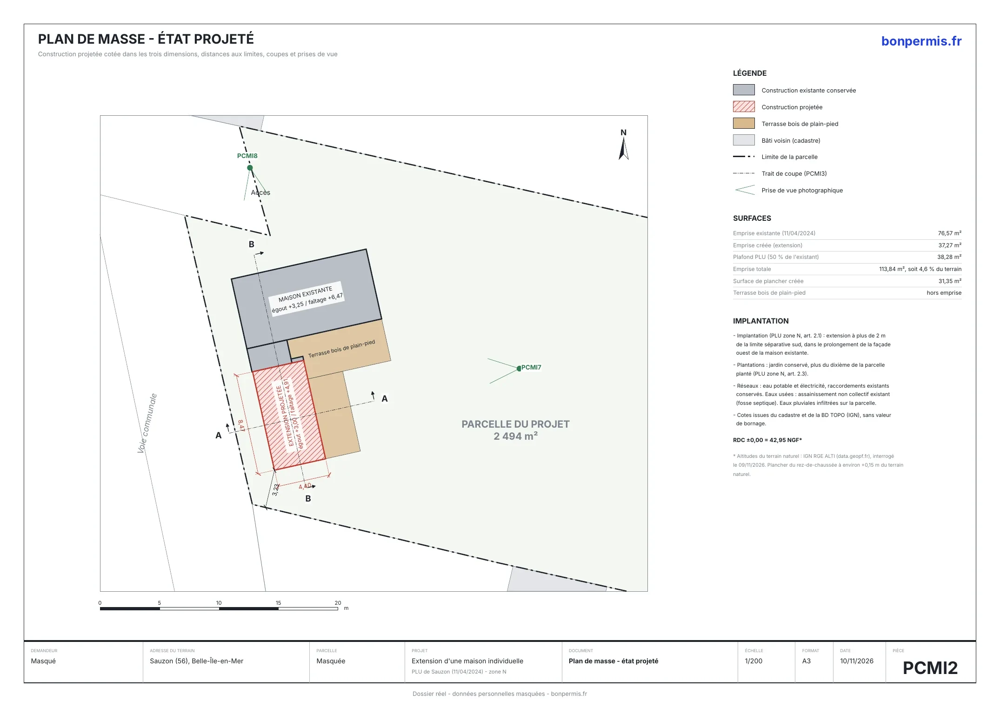
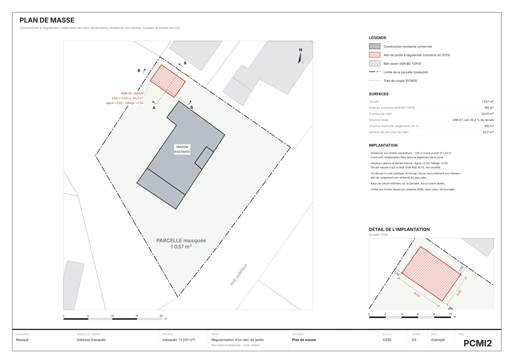

Exemple de plan de masse (DP2, PCMI2)
Trois plans de masse tels qu'on les livre, à ouvrir en grand. Et ce que la mairie veut y trouver.
Exemple 1 : une extension de maison

Exemple 2 : un abri de jardin

Exemple 3 : le plan sorti de notre outil

Ce qu'un plan de masse doit montrer
- Le terrain en entierSes limites, ses dimensions, les parcelles voisines.
- Ce qui existe déjàLa maison et les autres constructions, à garder ou à démolir.
- Votre projet, cotéLongueur, largeur et hauteur : c'est ce qu'on appelle « coté dans les trois dimensions ».
- Les distancesEntre le projet et chaque limite du terrain, et entre le projet et la maison.
- L'accès et les réseauxL'entrée depuis la rue, et les raccordements (eau, électricité, assainissement) quand le projet en a besoin.
- Les plantationsLes arbres gardés, supprimés ou plantés.
- Les repèresLe nord, l'échelle, l'endroit du trait de coupe et les endroits d'où les photos sont prises.
Pièce exigée par le code de l'urbanisme : article R. 431-36 pour une déclaration préalable, article R. 431-9 pour un permis de construire. Le règlement de votre mairie peut demander des précisions en plus. Mis à jour le 25 novembre 2026.
À lire aussi : Comment faire un plan de masse · Le plan de coupe · Toutes les pièces du dossier
Questions fréquentes
Quelle échelle pour un plan de masse ?
Aucune échelle n'est imposée. En pratique, entre le 1/100 et le 1/500 : il faut que tout le terrain tienne sur la feuille et que les cotes restent lisibles. L'échelle doit être écrite sur le plan.
Quelle différence entre DP2 et PCMI2 ?
C'est la même pièce. DP2 est son numéro dans une déclaration préalable, PCMI2 dans un permis de construire de maison individuelle.
Faut-il un géomètre ?
Non, ce n'est pas obligatoire. On part en général du plan cadastral. Attention : le cadastre n'a pas valeur de bornage, ses limites sont indicatives.
Peut-on faire un plan de masse à la main ?
Oui. La mairie n'impose ni logiciel ni professionnel. Elle attend un plan à l'échelle, coté et lisible.
Que veut dire « coté dans les trois dimensions » ?
Le plan indique la longueur, la largeur et la hauteur de la construction. La hauteur s'écrit à côté du projet, puisqu'on ne la voit pas sur une vue de dessus.